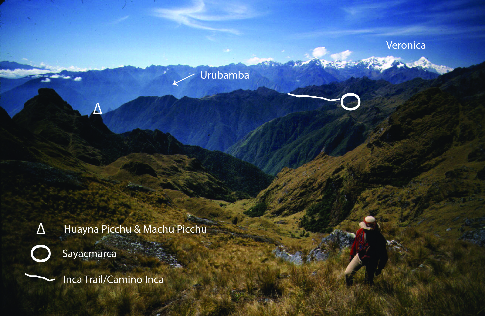
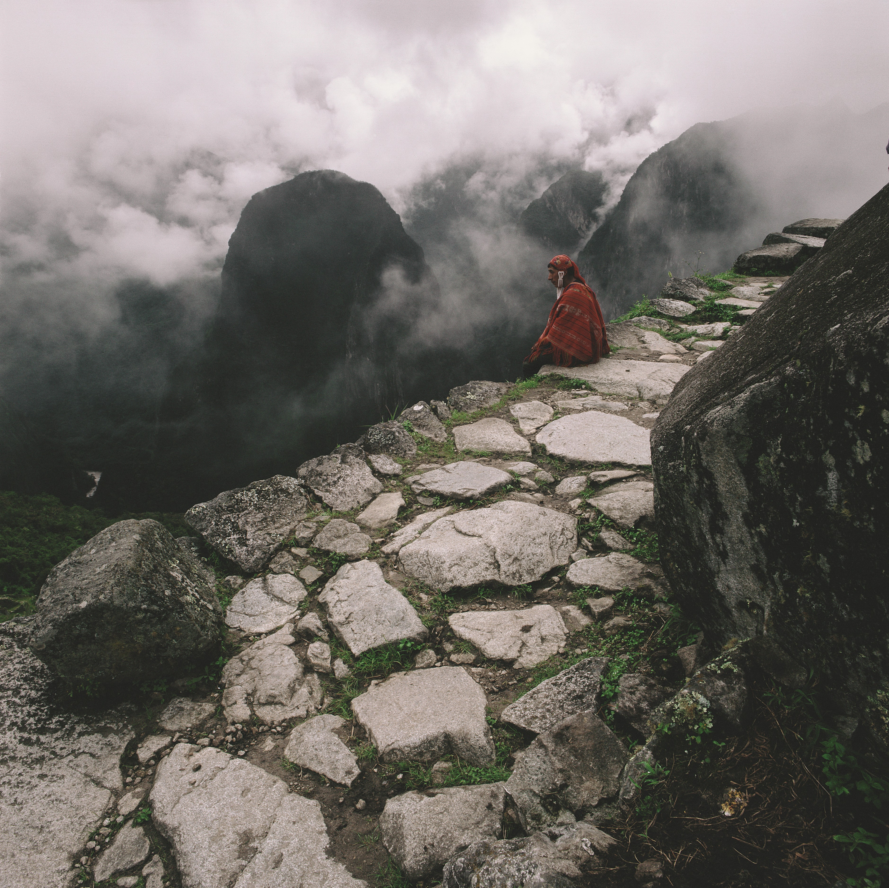
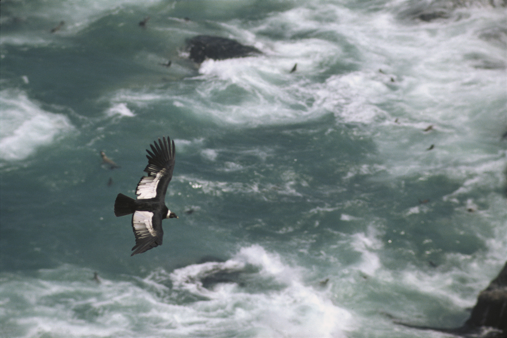

Introduction

“...it proverbial wealth, its varied therritory which seem to unite in the dunes of the coast, the arid deserts of Africa; in the vast altiplano, the monotonous steppes of Asia: in the elevated peaks of the Cordillera, the frigid polar regions; and in the dense forest of the Amazon region, with its active and luxurious vegetation, I decided to choose Peru as my field of exploration and study.”
So wrote the Italian scientist and explorer Antonio Raimondi of his fatefull 1849 decission to travel to Peru. This collection of photos is intended as an overview of the magnificent, vibrant and indescribably diverse country he studied for almost forty years, a country containing 80% of the world's recognized ecological zones, as well as a magnificent heritage left by the pre-Columbian cultures dating back more than three thousand years.
Words from the author: Jim Bartle (March, 2010)
These photos include work from twenty-two photographers, including accomplished photographers of Peru in general as well as several outstanding international photographers. But also included are a number of others who have focused on a single region — Lake Titicaca, Chachapoyas, The Cotahuasi Canyon—or a particular theme— archeology, orchids, mountain climbing. Their work brings a disctinctive quality that others simply cannot match. I would like to thank them all for their generosity in allowing the reproduction of their photographs.
I should specify “their outdoor photographs”; this book is overwhelmingly an outdoor book. There are no photos from muesums or the interios of churches (exellent books cover these themes), and the only photos of cultural artifacts are of pieces from the tombs of the Lord and Old Lord of Sipan during their excavations; the Lanzon of Chavin in its original location inside the themple; and the Ice Maiden — the famed frozen mummy of a sacrificed Inca girl — at the moment of her discovery.
Subject Matter
The subject matter is divided somewhat arbitrarily into six geographically based chapters:
- Amazonia, including the vast rainforest and the cloud forest on the eastern slope of the Andes;
- The southern departments of Arequipa and Puno, including Lake Titicaca on the altiplano, the Colca and Cotahuasi regions, and the “white city” of Arequipa;
- Cusco, Machu Picchu and the hart of the Inca Empire;
- The mountainous northen departments of Cajamarca and Amazones, where the Chachapoya culture thrived;
- The parched 2,400 km.-long Pacific coast, with its fishing villages, colonial cities, the remains of pre-Inca cultures, and diversity of marine birds and mammals;
- The towering Cordilleras of the Andes in the central departments of Ancash and Huanuco.
In addition there are short chapters on the Qhapaq Ñan, the great Inca Highway across Peru; the cascades between the Huancaya lakes in the sierra of Lima; the vicuñas at the Pampas Galeras Barbara d'Achille National Reserve; and a series of seven portraits of people and their activities from around the country.
Extraordinary picutres, words by Jim Bartle
Even with the most common subjetcs, Ive tried to find photos that are a little out of the ordinary. For example, Machu Picchu, Huayna Picchu, the Urubamba Canyon, and the Inca Trail are among the most emblematic, most photographed placed in Peru, Yet the extra ordinary photo below is taken from above the Aobamba Valley by the renowed antropologist Johan Reinhard, shows them from a fresh perspective. It places Machu Picchu (not quite visible below Huayna Picchu) and the surrounding network of Inca trails and settlements in the context of the ruggest Vilcabamba region.

Many of the photos reproduced here(in the book) are the result of similar perseverance, and greater skill and Inspiration. I hope you agree the results are worth the effort.
Some impresive pictures from the book




_Version 2.jpg)